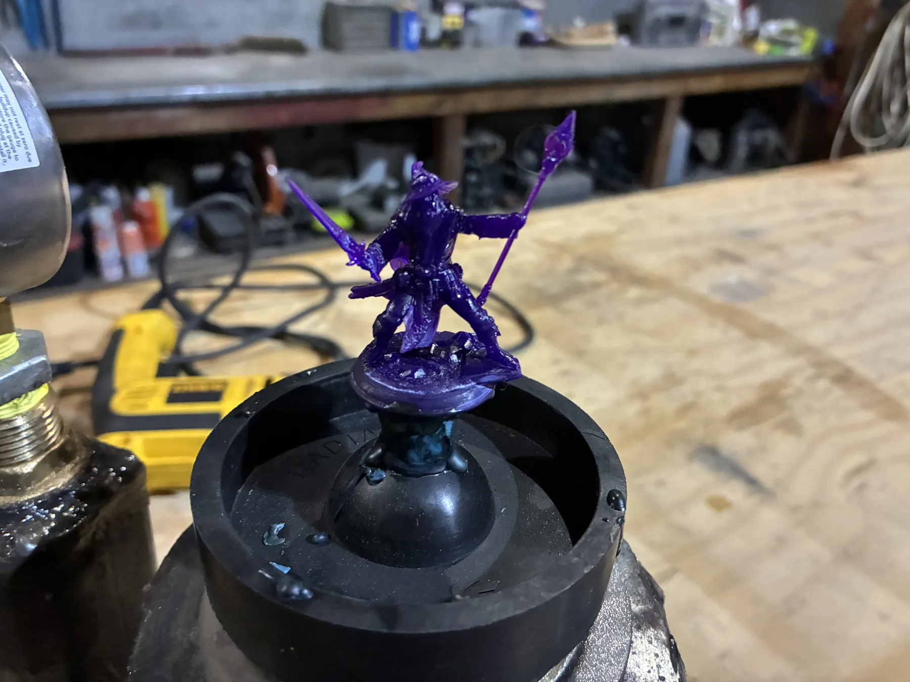
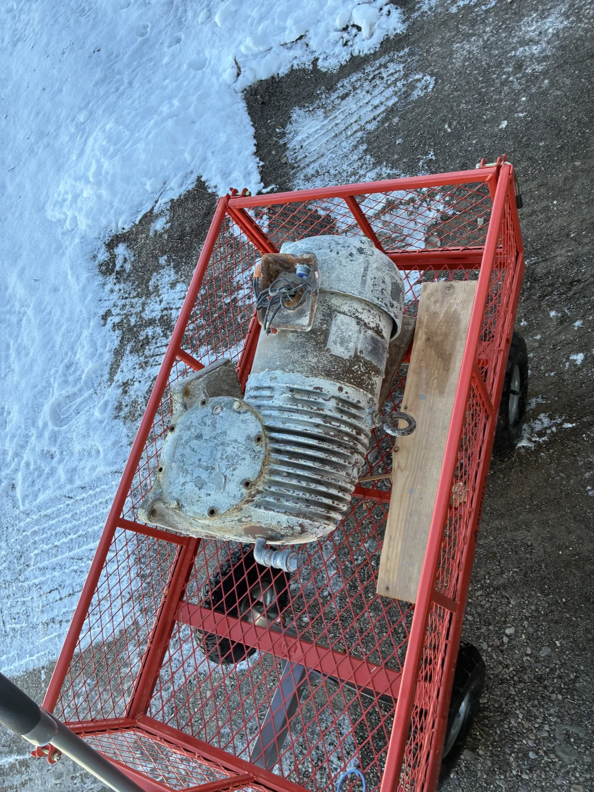
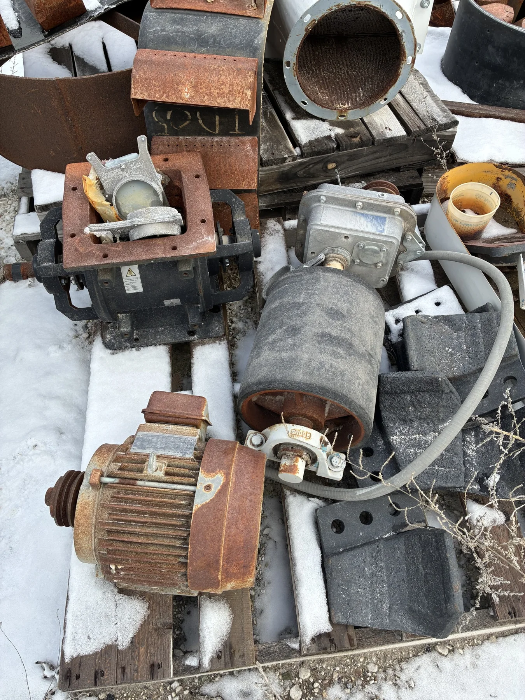
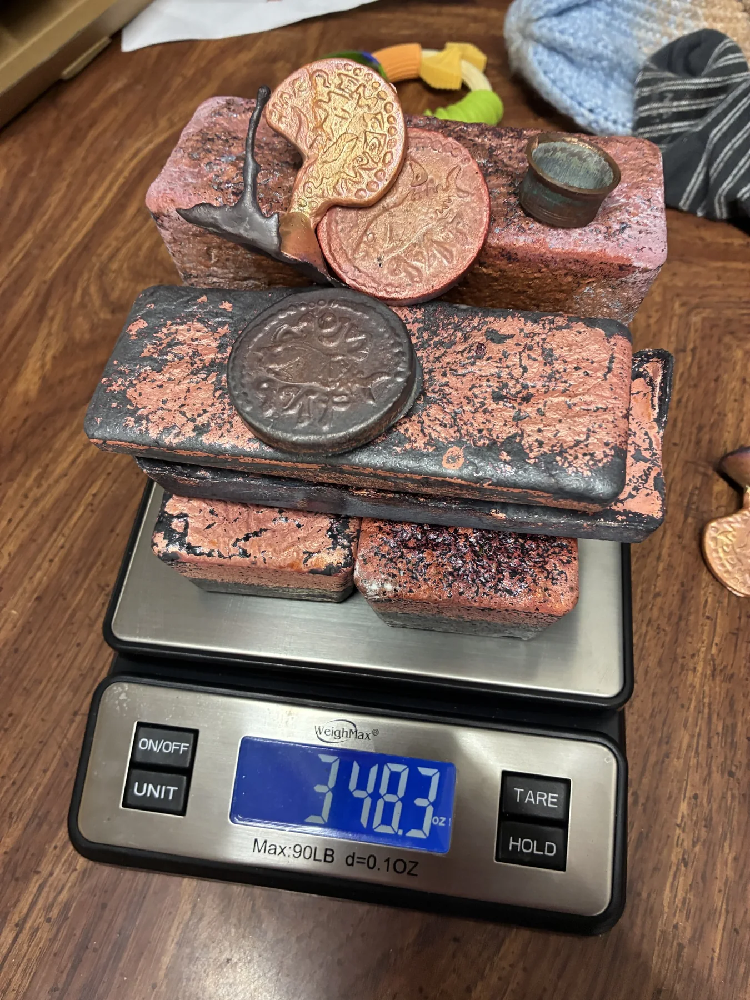
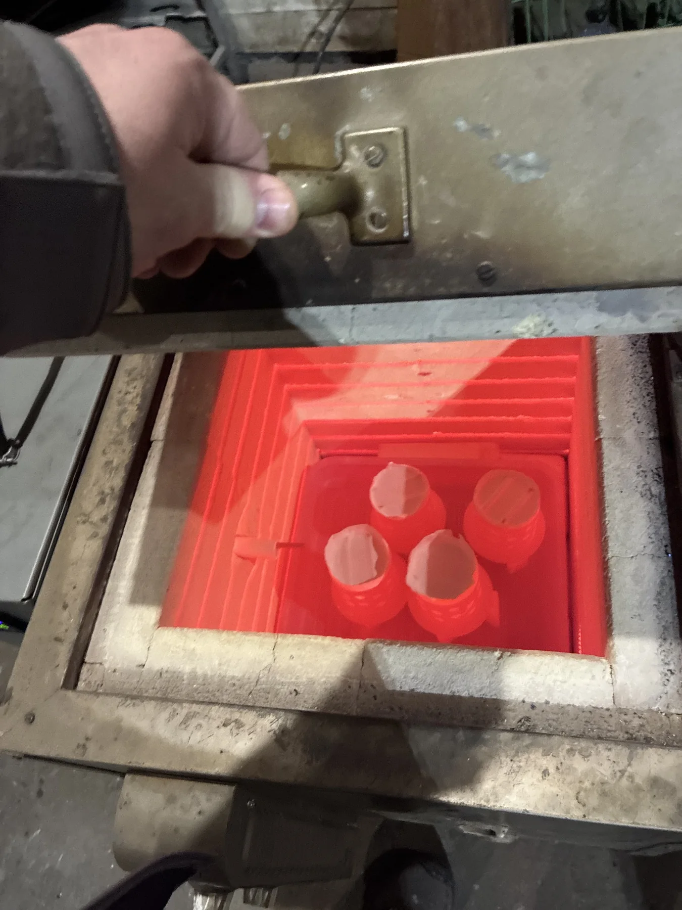
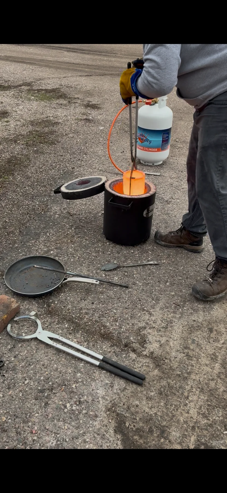
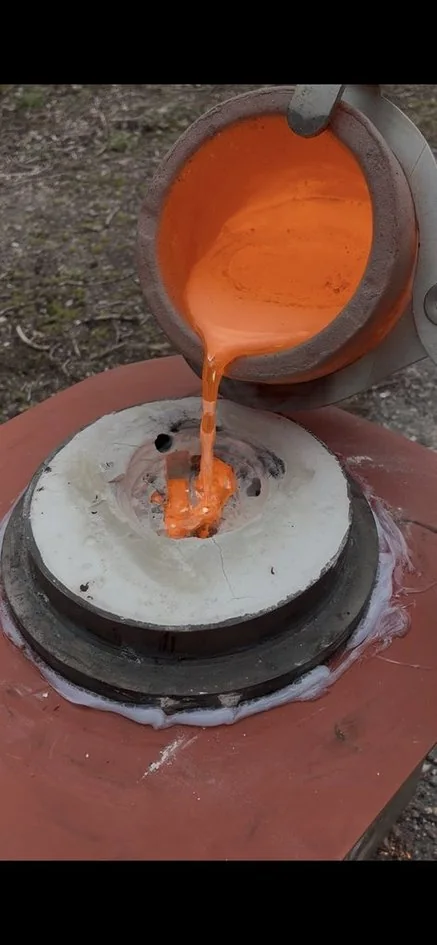

Step 01 • Print & sprue
The model becomes physical.
An STL is printed in castable resin. The print is attached to a sprue system that creates a path into the mold for the metal that will eventually replace it.
Like a Fish Foundry grew out of a simple tabletop problem: miniatures get used. They get packed into boxes, carried to game night, bumped, dropped, and passed around the table. We wanted pieces with more permanence—so we started casting them in real silicon bronze.
The idea for Like a Fish Foundry started with our high school D&D club.
Resin miniatures can capture incredible detail, but at our table they were also constantly losing swords, staffs, arms, and other delicate pieces. Students were actually playing with them—not keeping them safely on a shelf—and breakage became part of the routine.
That frustration led to an experiment: take the same kind of detailed miniature and turn it into bronze. The result had the weight and feel of a small metal object, while still preserving the character that made the original model worth printing.


A large part of the bronze begins as copper recovered from locally sourced recycled scrap metal.
Instead of seeing an old electric motor only as something worn out, we see useful metal that can be recovered, weighed, melted, and given another life. The copper is prepared as the base of our silicon bronze casting alloy.
Our working mix is approximately 95% copper, 4% silicon, and 1% manganese. Silicon bronzes are known for a useful combination of strength, corrosion resistance, and casting performance. The composition we use is in the same neighborhood as the traditional 95-1-4 family of cast silicon bronze alloys.
Metallurgy reference: Copper Development Association, C87300 / 95-1-4 silicon bronze and copper-silicon alloy guidance.

The process combines modern 3D printing with a casting method that has roots thousands of years old. The digital model is temporary; the bronze is the part meant to remain.

An STL is printed in castable resin. The print is attached to a sprue system that creates a path into the mold for the metal that will eventually replace it.

The sprued model is surrounded by investment material. In the kiln, the resin burns out and the mold is brought to casting temperature, leaving the miniature's shape as an empty space inside.

The prepared metal charge is melted at foundry temperature. What began as recovered copper is now molten silicon bronze, ready to fill the investment mold.
Keeping the charge measured matters. Copper, silicon, and manganese are combined by weight so the melt begins with the intended proportions.

Molten bronze is poured into the hot investment mold and flows through the channels left by the sprue. After the metal solidifies and cools, the investment can be broken away and the casting revealed.
From there, the sprue is removed and the miniature is cleaned and finished by hand. Small variations in surface and finish are part of making a real cast object one piece at a time.
Bronze doesn't make delicate details indestructible, but it gives a tabletop miniature a very different kind of durability from the brittle resin pieces that started this whole project. These are pieces made to be handled, transported, played with, and kept.
Over time bronze can change in appearance and develop patina. That's part of the appeal: instead of being a disposable game piece, it can become an object that carries the history of the campaigns it was part of.
Send us your STL and tell us what you have in mind.